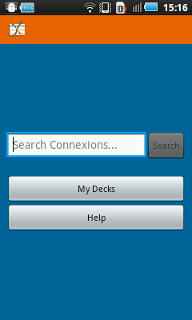
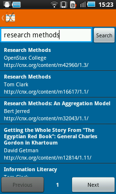

Welcome to QuizCards! QuizCards is an open-source flash cards and quiz app developed by Connexions. Connexions is an online repository of free textbooks and other eductional material, licensed under the Creative Commons attribution license.
Main menu

From the main menu, you can search Connexions for chapters, access your
existing decks of cards, or access this help screen.
Search

When you search, the results will appear like this. You can
change and refine your initial search at the top and go between pages
of search results using the controls at the bottom.
Each search result shows the name, author, and web address of a chapter
on Connexions. Tap a search result to try downloading the chapter. If
the chapter has a glossary that can be made into flash cards, it will
be downloaded and added to your list of decks.
My decks
Select
"My Decks" from the main menu to view all the decks of flash cards you
have stored on your device. Tap the icon in the top right to create a
new deck or select a deck from the list to view and edit it.